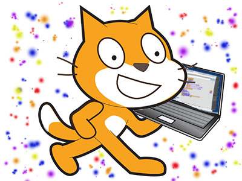

Name Assignment
Description
Use scratch to design and create a program that shows my name. The requirements were to add a sprite for each letter in my name and give them 3 unique behaviors. The program needed to run when the green flag was clicked and for extra credit I added a function to reset the scene to the beginning each time the green flag was clicked. For my name assignment I had my letters dancing around and doing fun stuff cause I like having fun!!!
Concepts Learned:
- Using event blocks - green flag clicked, when key pressed
- Conditional statements - used if statements to make somethiung happen if another event happened.
- Used loops - I used a forever block to make things nonstop, I used a repeat until block to repeat an event a certain amount of times.
- Sprites - I created my own sprites using the sprite editor, I used the library of sprites to find letters in my name and adjusted the costumes.
- Movement - I used the x and y values to make my sprites move to their original location when the green flag was clicked, I rotated the sprites to make them move around in a cooler way.
Computer Buying Project
Description
In the computer project we interviewed a person too see what they would look for in a computer. The requirements were to use scratch to create the interview then choose four computers that match the best to what was requested, we also were required to define all the parts of the computer
Concepts Learned:
- I learned how to Make characters hide/show.
- I learned how to make a skit aka using the wait__seconds control.
- I learned about all the parts of a computer.
- I learned how to change backgrounds.
- I learned that what type of computer you need can be very important.
- I learned how to reset everything back to its original state.
Final Project~Cupcake Debt
Description
For our final project on scratch we were assaighned to make a storyboard or a game on scratch! I made a small game with a backround story!!
Concepts Learned:
- I learned how to use broadcast.
- I learned how to use a lot of sensing blocks.
- I learned how to use more of the if then blocks!
- I learned how to make sprites look like thhey are "actually walking" by switching their costume and more.
